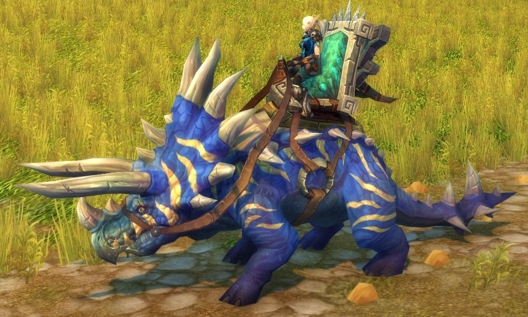
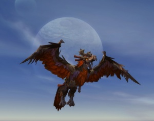
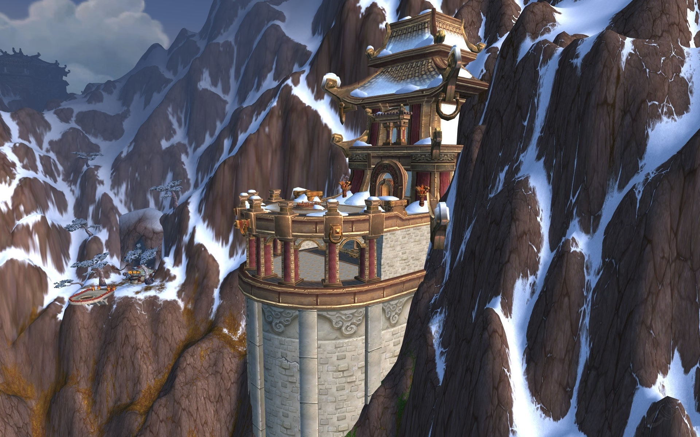
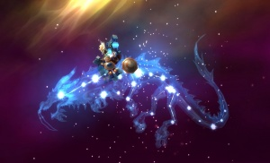

Donjon de la tempête
Raz-de-Néant | OUTRETERRE
Kael'thas Haut-Soleil Al'ar Saccageur du vide
Grande astromancienne Solarian
| Liste donjon |
Saccageur du vide
Grande astromancienne Solarian
| Liste donjon |
Les salles des Sethekk
Forêt de Terokkar | OUTRETERRE
Anzu Mode héroïque! Roi-Serre IkissTrône du tonnerre

Île du tonnerre | PANDARIE
! Mode héroïque
Horridon  Ji Kun Caveaux Mogu’shan
Val de l'éternel Printemps | PANDARIE
! Mode héroïque
Elegon 